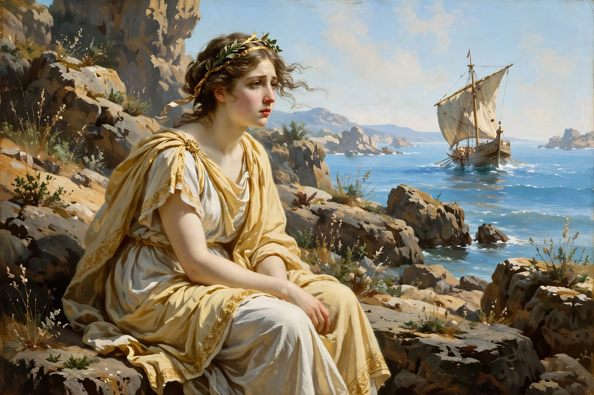

From Wikipedia, the free encyclopedia
| Author | Gaius Valerius Catullus |
|---|---|
| Language | Latin |
| Form | Epyllion, 408 lines, dactylic hexameter |
| Subject | Wedding of Peleus and Thetis; Ariadne on Naxos |
| Date | c. 55 BC (approx.) |
Catullus 64 is the longest poem of the Roman poet Catullus — a miniature epic (epyllion) of 408 hexameters recounting the wedding of Peleus and the sea-goddess Thetis. It is generally regarded as Catullus's most ambitious and accomplished work, and a high point of the neoteric movement in Latin poetry.

Ariadne on Naxos, the poem's central ecphrasis.
The poem is built in a complex ring structure. The outer frame tells of the Argo, the first ship, and of the love of Peleus and Thetis and their wedding feast, attended by gods and mortals. At the wedding, attention shifts to a woven coverlet on the marriage couch, and the poem plunges into its longest episode: an ecphrasis describing the abandoned Ariadne on the shore of Naxos, lamenting the faithless Theseus — whose story, including his father's suicide and the killing of the Minotaur, unfolds in flashback. Ariadne's curse that Theseus suffer as she has suffered is duly fulfilled. The poem returns to the wedding for the song of the Fates (the Parcae), who prophesy the glory and bloody career of the couple's unborn son, Achilles. A brief epilogue contrasts the heroic age, when gods visited the earth, with the corruption of the present.
Scholars have long debated how the radiant wedding frame and the dark inset tale comment on each other: love and betrayal, marriage and abandonment, glory and slaughter mirror one another throughout. The poem's intricate intertextual play with Homer, Euripides, Apollonius and Ennius exemplifies the learned, polished aesthetic of the poetae novi (neoterics), Catullus's circle. Virgil studied it closely, echoing it in both the Aeneid and the Georgics.